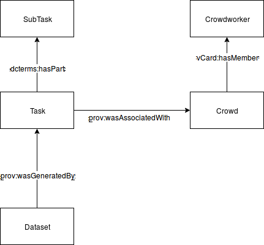
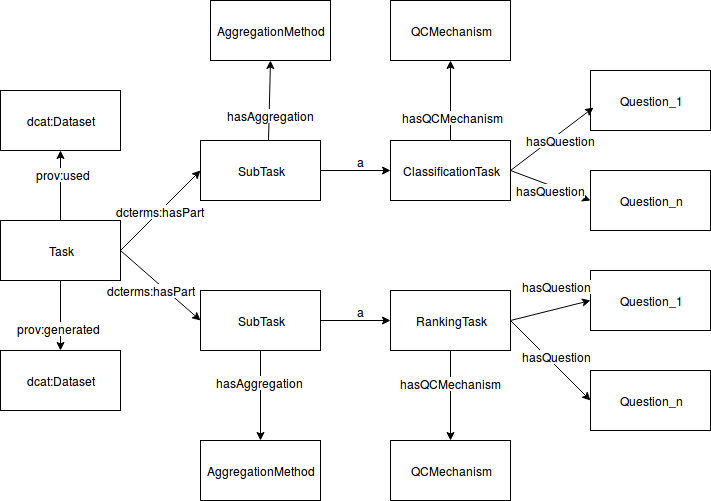

Crowd-voc aims at providing a common vocabulary to describe datasets created through microtask crowdsourcing. The ontology aims to document crowdsourcing experiments and hence allow requesters to improve their effectivity and efficiency over time; enable repeatability and reproducibility of crowdsourcing experiments; and foster the exchange and reuse of data generated via crowdsourcing.
This is version 0.1
| crowd-voc | <http://qrowd-project.eu/def/crowd-voc#> |
| owl | <http://www.w3.org/2002/07/owl#> |
| rdfs | <http://www.w3.org/2000/01/rdf-schema#> |
| xsd | <http://www.w3.org/2001/XMLSchema#> |
| dcterms | <http://purl.org/dc/terms/#> |
| vocab-org | <https://www.w3.org/TR/vocab-org/#> |
| org | <http://www.w3.org/ns/org#> |
| s | <http://schema.org/> |
| skos | <http://www.w3.org/2004/02/skos/core#> |
| foaf | <http://xmlns.com/foaf/0.1/> |
| ex | <http://example.com/> |
The core of the vocabulary is shown in the figure below, we re-use whenever possible classes. The main entity is Task, a prov:Activity that describes the crowdsourcing task, ultimately generating a dcat:Dataset. the task is associated with a Crowd. A Crowd is a subclass of prov:Agent, added by us to complement current prov subclasses prov:Organization, prov:Person and prov:SoftwareAgent. A Crowd has members of type prov:Person, the Crowdworkers. Crowdworkers may participate in many Crowds assembled to run different Tasks. To establish the link between Crowds and Crowdworkers, we reuse the Organization ontology, making Crowd an instance of vocab-org:Organization, allowing the usage of the vocab-org:hasMember property.

ex:aTask
a prov:Activity;
dcterms:hasPart ex:subTask1;
dcterms:hasPart ex:subTask2;
dcterms:description "My Crowdsourcing task"
prov:wasAssociatedWith ex:aCrowd .
ex:subTask1
a prov:Activity;
dcterms:description "Identify cat in image"
ex:subTask2
a prov:Activity;
dcterms:description "Judge if cat is dead or alive"
ex:aCrowd
a crowd-voc:Crowd;
a prov:Agent;
vocab-org:hasMember ex:Crowdworker;
ex:Crowdworker
a prov:Person;
ex:generatedDataset
a dcat:dataset;
dcterms:title "Dataset generated by the Task";
prov:wasGeneratedBy ex:aTask .
The below figure describes the subdivision of a task in subtasks. A tasks takes an input dataset and applies to each item the definition of the subtasks, to produce a dataset (of annotations, the items with metadata?). The example task is comprised by two SubTasks, one of ClassificationTask type and another of RankingTask type, each subtask is comprised by an arbitrary number of questions We assume that the task is applied to each item in the dataset (this needs to be constrained somewhere, SHACL rule!), and that all members of the assembled crowd did all (Question: Drop-out modelling?)

ex:aTask
a prov:Activity;
dcterms:hasPart ex:subTask1;
dcterms:hasPart ex:subTask2;
dcterms:description "My Crowdsourcing task";
prov:wasAssociatedWith ex:aCrowd;
prov:used ex:InputDataset;
prov:generated ex:OutputDataset;
ex:subTask1
a prov:Activity;
dcterms:description "Identify if kitten in image";
a crowd-voc:ClassificationTask .
crowd-voc:hasAggregation ex:s1_aggregation
crowd-voc:hasQCMechanism ex:s1_qc
crowd-voc:hasQuestion ex:s1_q1
ex:subTask2
a prov:Activity;
dcterms:description "Determine if the image is happy";
a crowd-voc:SentimentAnalysisTask .
crowd-voc:hasAggregation ex:s2_aggregation
crowd-voc:hasQCMechanism ex:s2_qc
crowd-voc:hasQuestion ex:s2_q1
ex:s1_aggregation
a crowd-voc:AggregationMethod
ex:s2_aggregation
a crowd-voc:AggregationMethod
ex:s1_qc
a crowd-voc:QCMechanism
ex:s2_qc
a crowd-voc:QCMechanism
ex:s1_q1
a crowd-voc:Question;
crowd_voc:question_text "Do you see a kitty in the image?"
ex:s2_q1
a crowd-voc:Question;
crowd_voc:question_text "Does the image transmits happiness?"
IRI: TaskIRI
A task of content verification
IRI: TaskIRI
A task of classification
IRI: TaskIRI
A task of classification
IRI: TaskIRI
A task of classification
IRI: TaskIRI
A ranking task
IRI: TaskIRI
A Moderation task
IRI: TaskIRI
A ContentCreation task
IRI: TaskIRI
A Moderation task
IRI: TaskIRI
A SubTask that is part of CrowdSourcing Task, for example, an image labelling task might consists of one subTask about identifying a certain entity in the image, and another about cropping the image to center the
IRI: SubTaskIRI
A SubTask that is part of CrowdSourcing Task, for example, an image labelling task might consists of one subTask about identifying a certain entity in the image, and another about cropping the image to center the
IRI: QuestionIRI
A question that is shown to the Crowdworker
IRI: QualityControlIRI
Quality control mechanism applied to a task: verifiable/control question, pre-screening/test question, honeypot(sample-based filtering), agreement-based/consensus, None
IRI:
IRI:
A subTask has a question IRI:
Motivation of the task. Possible values are: monetary rewards, fun, personal achievement, social belonging, social status, altruism. IRI:
Workflow of the task: Find-Fix-Verify, Iterative Improvement, Crowd-guided workflow, Threshold-based workflow, Sequential interdependent, Parallel IRI:
A Crowdsourcing Task